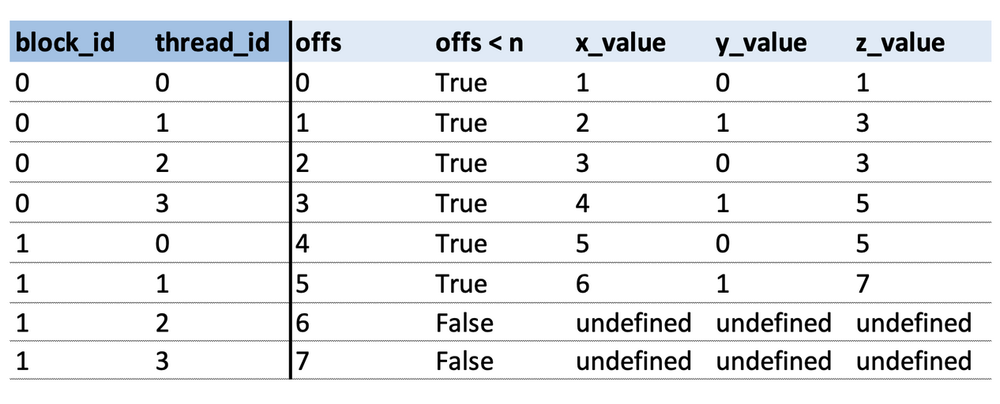
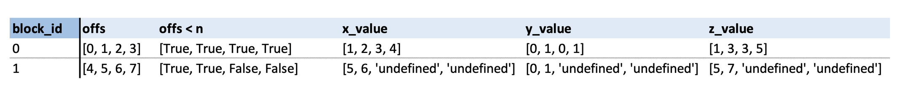
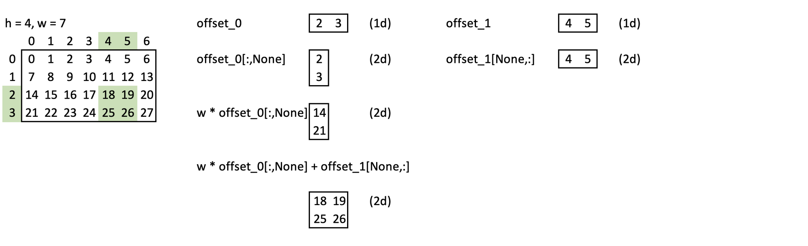
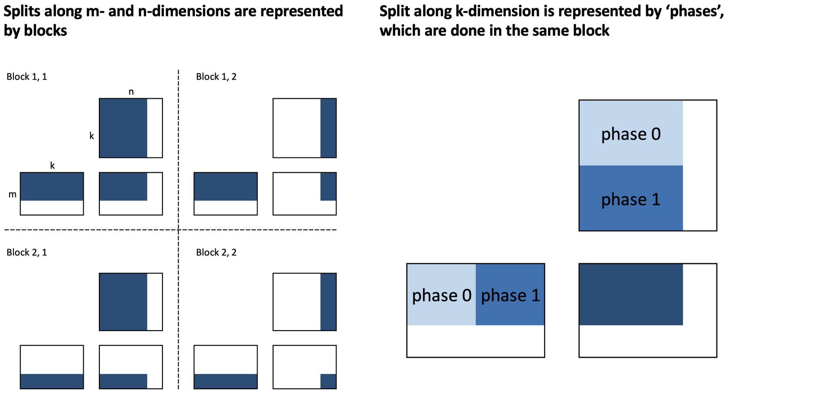
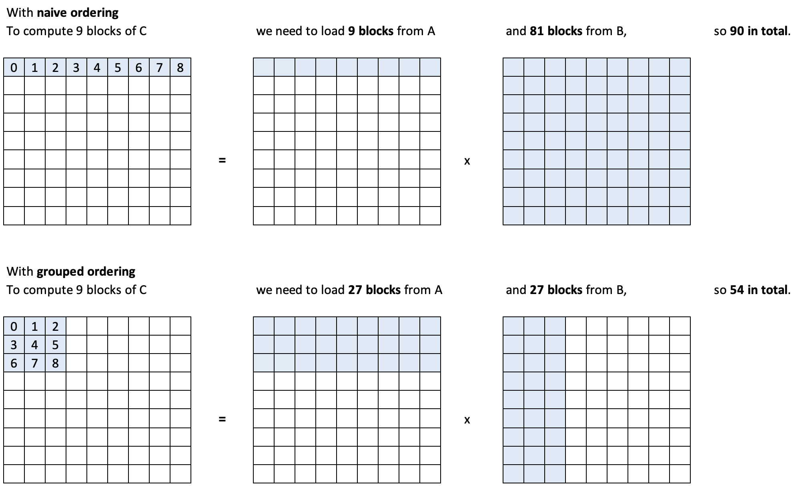
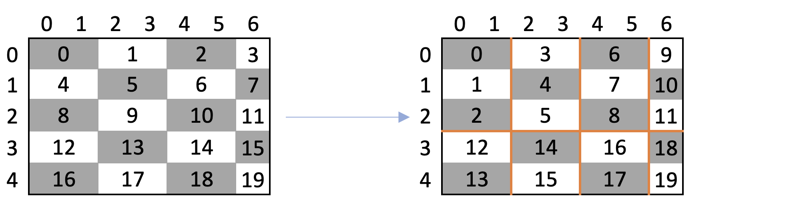
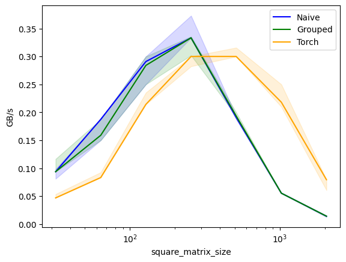
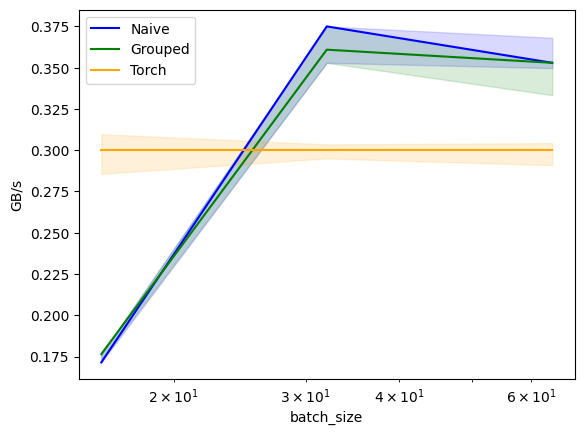
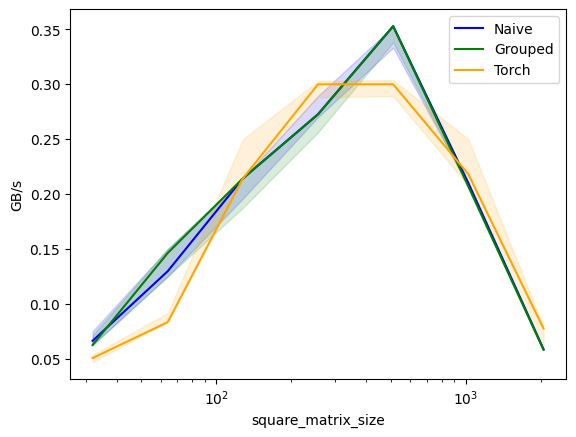
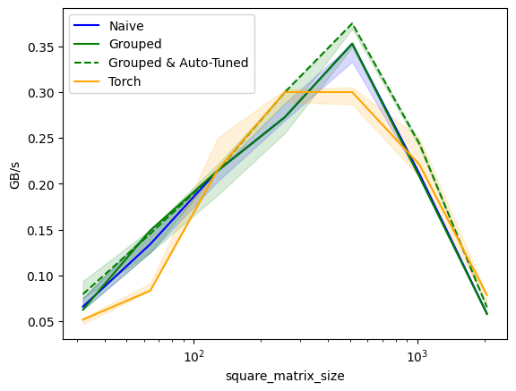

GPU MODE Lecture 14: Practitioners Guide to Triton
- GPU MODE Lecture Notes: My notes from the GPU MODE reading group lectures run by Andreas Kopf and Mark Saroufim.
- Introduction
- Overview of the Talk
- Why and When to Use Triton
- How to Write Triton Kernels
- Practical Examples
- Benchmarking
- Auto-Tuning
- Conclusion and Resources
- YouTube Recording: Lecture 14: Practitioners Guide to Triton
- Code: gpu-mode/lectures/lecture_014
Introduction
- Speaker: Umer Adil
- Former management consultant until October 2023.
- Transitioned to technical AI work focusing on open-source contributions.
- Contributed to projects like LangChain and GPT Engineer.
- Became a maintainer for GPT Engineer.
- Currently contributing to Hugging Face’s diffusers.
- Implemented features like ControlNetXS, LoRAs, etc.
- Contact:
- GitHub: UmerHA
- Twitter: @UmerHAdil
- Support Umer:
- Independent open-source contributor.
- Ko-fi: https://ko-fi.com/umerha
Overview of the Talk
- Title: A Practitioner’s Guide to Triton
- Agenda:
- Why and When to Use Triton
- How to Write Triton Kernels
- Programming Model
- Practical Examples:
- Copying a Tensor
- Grayscaling an Image
- Fast Matrix-Matrix Multiplication Kernel
- Benchmarking and Auto-Tuning
- Performance Measurement
- Kernel Optimization
Why and When to Use Triton
What is Triton?
- Triton is a language for programming GPUs.
- More convenient than CUDA.
- Allows writing Python-like code that compiles to PTX (Parallel Thread Execution).
- PTX is the same intermediate representation used by CUDA.
- Triton Compiler:
- Optimizes code by rearranging it for better performance without changing its meaning.
- Targets the same hardware as CUDA.
Comparing Triton to CUDA
- CUDA:
- Like a high-end camera.
- Offers thousands of knobs for fine-grained control.
- Achieves the absolute best performance.
- Harder to write and debug.
- Like a high-end camera.
- Triton:
- Like a high-end smartphone camera.
- Easier to use with fewer controls.
- Provides very good performance with less effort.
- Easier to write and debug.
- Like a high-end smartphone camera.
torch.compile() vs. Triton
torch.compile():- Optimizes your PyTorch code but not the underlying kernels.
- Changes your code to make the best use of existing GPU kernels.
- Sometimes writes simple new kernels using Triton.
- Triton:
- Allows writing custom kernels for performance-critical parts.
- Offers more control over kernel behavior.
When to Use Triton
- Optimization Steps:
- Use
torch.compile():- Start by using
torch.compile()to optimize your code.
- Start by using
- Adapt Your Code:
- Rewrite code to be more suitable for
torch.compile().- E.g., eliminate graph breaks to enable CUDA graphs.
- Rewrite code to be more suitable for
- Profile and Identify Bottlenecks:
- Find slow parts of your code using profiling tools.
- Write custom Triton kernels for these parts.
- Consider CUDA:
- If still not fast enough, write custom CUDA kernels.
- Use
- Note: For maximum performance from the start, you may choose CUDA directly.
Rough Edges in Triton
- New-ish Project:
- Contains rough edges; code may not behave as expected.
- Expected to become more polished over time.
- Recommendation:
- Debugging is important; use “simulator mode” when possible.
- Be aware of limitations on older GPUs or with certain operations.
How to Write Triton Kernels
Debugging Triton Kernels
Simulator Mode:
- Set environment variable
TRITON_INTERPRET='1'.- Enables debugging by running kernels on the CPU.
- Set environment variable
Advantages:
- Debug and print variables like in CPU programs.
- Easier to set breakpoints and inspect program flow.
Utility Functions:
import os os.environ['TRITON_INTERPRET'] = '1' # needs to be set *before* triton is imported import triton import triton.language as tl from IPython.core.debugger import set_trace def test_pid_conds(conds, pid_0=[0], pid_1=[0], pid_2=[0]): """ Test if conditions on program IDs (PIDs) are fulfilled. Args: conds (str): String containing conditions to check. Multiple conditions are separated by commas. Each condition consists of an operator and a number. pid_0 (list): First program ID value in a single-element list. Default: [0] pid_1 (list): Second program ID value in a single-element list. Default: [0] pid_2 (list): Third program ID value in a single-element list. Default: [0] Examples: '=0' -> Checks if pid_0 equals 0 ',>1' -> Checks if pid_1 is greater than 1 '>1,=0' -> Checks if pid_0 > 1 AND pid_1 = 0 Returns: bool: True if all conditions are met, False otherwise """ # Extract PID values from lists pids = pid_0[0], pid_1[0], pid_2[0] # Remove spaces and split conditions by comma conds = conds.replace(' ','').split(',') # Check each condition against corresponding PID for i, (cond, pid) in enumerate(zip(conds, pids)): if cond == '': continue # Skip empty conditions # Split condition into operator and threshold value op, threshold = cond[0], int(cond[1:]) # Validate operator valid_ops = ['<', '>', '>=', '<=', '=', '!='] if op not in valid_ops: raise ValueError(f"Rules may only use these ops: {valid_ops}. Invalid rule: '{cond}'.") # Convert '=' to '==' for Python evaluation op = '==' if op == '=' else op # Evaluate condition if not eval(f'{pid} {op} {threshold}'): return False return Truecheck_tensors_gpu_ready:def check_tensors_gpu_ready(*tensors): """ Verify that all input tensors are contiguous and on GPU. Args: *tensors: Variable number of PyTorch tensors to check Raises: AssertionError: If any tensor is not contiguous or not on GPU """ for t in tensors: assert t.is_contiguous(), "A tensor is not contiguous" # Skip GPU check if in simulator mode if not os.environ.get('TRITON_INTERPRET') == '1': assert t.is_cuda, "A tensor is not on cuda"- Ensure data is ready for GPU execution.
- Assert all tensors are contiguous in memory
- Assert all tensors are on GPU, if not simulating
- Ensure data is ready for GPU execution.
print_if:def print_if(txt, conds, pid_0=[0], pid_1=[0], pid_2=[0]): """ Print text if specified PID conditions are met. Useful for debugging specific threads in GPU kernels. Args: txt (str): Text to print conds (str): Conditions string (same format as test_pid_conds) pid_0, pid_1, pid_2 (list): Program ID values to check """ if test_pid_conds(conds, pid_0, pid_1, pid_2): print(txt)- Output variable values for debugging, depending on conditions on PIDs
breakpoint_if:def breakpoint_if(conds, pid_0=[0], pid_1=[0], pid_2=[0]): """ Set a breakpoint if specified PID conditions are met. Useful for debugging specific threads in GPU kernels. Args: conds (str): Conditions string (same format as test_pid_conds) pid_0, pid_1, pid_2 (list): Program ID values to check """ if test_pid_conds(conds, pid_0, pid_1, pid_2): set_trace()- Pause execution at specific points, depending on conditions on PIDs
Programming Model
CUDA vs. Triton
- CUDA:
- Two-tiered Decomposition:
- Blocks: Groups of threads.
- Threads: Operate on scalar values.
- Threads within a block share the same Streaming Multiprocessor (SM) and shared memory.
- Two-tiered Decomposition:
- Triton:
- One-tiered Decomposition:
- Programs (equivalent to blocks in CUDA).
- Operates on vectors instead of scalars.
- Vectorized Operations:
- All operations (loading, computing, storing) are performed on vectors.
- No explicit management of threads or shared memory.
- One-tiered Decomposition:
Example: Adding Two Vectors
Task:
- Add vectors X and Y of size 8 to produce Z.
CUDA Approach:
def add_cuda_k(x, y, z, n, bs): """ A simplified Python representation of a CUDA kernel that adds two vectors element by element. This function demonstrates how parallel processing works in CUDA, where multiple blocks and threads process different parts of the data simultaneously. Parameters: x (array): First input vector to be added y (array): Second input vector to be added z (array): Output vector where results will be stored n (int): Total size of the input vectors bs (int): Block size - number of threads per block (determines how many elements each block processes) Example: If n = 8 and bs = 4: - We'll have 2 blocks (block_id: 0,1) - Each block has 4 threads (thread_id: 0,1,2,3) - Each thread processes one element block 0 handles indices 0-3, block 1 handles indices 4-7 """ # In CUDA, these values would be automatically set based on the GPU's # thread and block configuration. Here they're placeholders. block_id = ... # Block ID (e.g., 0 or 1 if we have 2 blocks) thread_id = ... # Thread ID within the block (e.g., 0,1,2,3 if block size is 4) # Calculate which element this specific thread should process # Example: If block_id=1, bs=4, thread_id=2: # offs = 1 * 4 + 2 = 6 (this thread processes the 7th element) offs = block_id * bs + thread_id # Only process if we're within the vector bounds # This check is necessary because the number of threads might be more # than the actual data we need to process if offs < n: # Each thread reads its assigned values from the input vectors x_value = x[offs] # Get value from first input vector y_value = y[offs] # Get value from second input vector # Perform the addition operation z_value = x_value + y_value # Store the result in the output vector z[offs] = z_value # Note: In actual CUDA programming, all variables above are scalars # (single values, not arrays). Each thread works with just one element, # but many threads run in parallel to process the entire array quickly.- Use 2 blocks with 4 threads each (block size of 4).
- Each thread computes on a scalar value.

Triton Approach:
def add_triton_k(x, y, z, n, bs): """ A representation of a Triton kernel that adds two vectors element by element. Unlike CUDA, Triton operates on vectors (groups of elements) rather than individual scalars, which can lead to more efficient code execution. Parameters: x (array): First input vector to be added y (array): Second input vector to be added z (array): Output vector where results will be stored n (int): Total size of the input vectors bs (int): Block size - number of elements to process in each block (This determines the size of the vectors we operate on) Key Differences from CUDA: - Triton processes vectors (multiple elements at once) instead of single values - Operations are vectorized, meaning they work on entire arrays simultaneously - No explicit thread_id needed as Triton handles multiple elements per block """ # Get the block ID for this kernel instance # tl.program_id(0) is Triton's way of identifying which block we're processing block_id = tl.program_id(0) # Example: 0 or 1 if processing in two blocks # Create a vector of offsets for this block # tl.arange(0, bs) creates a vector like [0, 1, 2, ..., bs-1] # For example, if block_id=1 and bs=4: # offs = 4 + [0,1,2,3] = [4,5,6,7] offs = block_id * bs + tl.arange(0, bs) # Vector of indices to process # Create a mask for valid elements # This returns a vector of boolean values # Example: if n=6 and offs=[4,5,6,7], mask=[True,True,False,False] mask = offs < n # Vector of bools showing which elements are valid # Load multiple elements at once from input vectors # x[offs] loads multiple values in parallel # Example: if offs=[4,5,6,7], this loads four elements at once x_values = x[offs] # Load vector of values from first input y_values = y[offs] # Load vector of values from second input # Perform vectorized addition # This adds entire vectors element-wise in one operation # Example: [1,2,3,4] + [5,6,7,8] = [6,8,10,12] z_value = x_value + y_value # Add vectors element-wise # Store results back to memory # Writes multiple elements at once # The mask ensures we only write valid results z[offs] = z_value # Store vector of results # Note: All operations above work on vectors (multiple elements at once) # This is more efficient than CUDA's scalar operations because: # 1. Fewer memory transactions are needed # 2. Vector operations can utilize SIMD instructions # 3. Less overhead from individual thread management- Use 2 programs (no threads).
- Each program operates on a vector of size 4.
- Offsets and masks are vectors.

Jargon
- Program:
- A kernel instance processing a block of data.
- PID (Program ID):
- Equivalent to Block ID in CUDA.
- Vectorized Operations:
- Simultaneous operations on multiple data points.
Practical Examples
import torch
import triton
import triton.language as tl
def cdiv(n, d):
"""
Compute ceiling division between two numbers.
Args:
n: Numerator
d: Denominator
Returns:
Ceiling division result
"""
return (n + d - 1) // dx = torch.tensor([1,2,3,4,5,6])
y = torch.tensor([0,1,0,1,0,1])
x, y, x+y(tensor([1, 2, 3, 4, 5, 6]),
tensor([0, 1, 0, 1, 0, 1]),
tensor([1, 3, 3, 5, 5, 7]))Example 1: Copying a Tensor
def copy(x, bs, kernel_fn):
"""
Launch a Triton kernel to copy data from one GPU tensor to another.
Args:
x: Input tensor to copy from
bs: Block size - number of elements processed per GPU thread block
kernel_fn: Triton kernel function to execute
Returns:
z: New tensor containing copied data
"""
# Create output tensor with same properties as input
z = torch.zeros_like(x)
# Verify tensors are GPU-ready
check_tensors_gpu_ready(x, z)
# Calculate grid dimensions for GPU execution
n = x.numel() # Total number of elements
n_blocks = cdiv(n, bs) # Number of thread blocks needed
grid = (n_blocks,) # 1D grid configuration
# Launch kernel on GPU
kernel_fn[grid](x, z, n, bs)
return zObjective
- Copy tensor X of shape N to tensor Z.
Steps
- Define Kernel:
- Use
@triton.jitdecorator. - Function arguments are pointers to tensors and size parameters.
- Use
- Calculate Offsets:
- Compute offsets using PID and block size.
offsets = pid * block_size + tl.arange(0, block_size)
- Create Mask:
- Prevent out-of-bounds access.
mask = offsets < N
- Load and Store Data:
- Load data from X:
x = tl.load(X + offsets, mask=mask) - Store data to Z:
tl.store(Z + offsets, x, mask=mask)
- Load data from X:
- Launch Kernel:
- Determine grid size:
grid = (num_blocks,) - Call kernel with
gridandblock_size.
- Determine grid size:
Debugging
Intentional Bug: Incorrect offset calculation
# Basic kernel with incorrect offset calculation @triton.jit # This decorator converts the Python function into GPU code def copy_k(x_ptr, z_ptr, n, bs: tl.constexpr): """ Initial version of copy kernel - demonstrates common mistake. Important Notes: - The @triton.jit decorator transforms this Python function into GPU code - Only a limited set of operations are allowed inside GPU kernels: * Basic arithmetic and logic operations are allowed * Python print() and debugging tools like breakpoints are NOT allowed * Use specialized Triton functions for GPU operations Args: x_ptr: Pointer to input tensor data (Triton automatically converts tensor to pointer) z_ptr: Pointer to output tensor data n: Total number of elements bs: Block size (marked as compile-time constant with tl.constexpr) Note: This version has a bug - it processes the same elements in each block! """ pid = tl.program_id(0) # Get current block ID offs = tl.arange(0, bs) # Creates offsets [0, 1, ..., bs-1] mask = offs < n # Prevent out-of-bounds access x = tl.load(x_ptr + offs, mask) # Load input values tl.store(z_ptr + offs, x, mask) # Store to output print_if(f'pid = {pid} | offs = {offs}, mask = {mask}, x = {x}', '')z = copy(x, bs=2, kernel_fn=copy_k)pid = [0] | offs = [0 1], mask = [ True True], x = [1 2] pid = [1] | offs = [0 1], mask = [ True True], x = [1 2] pid = [2] | offs = [0 1], mask = [ True True], x = [1 2]ztensor([1, 2, 0, 0, 0, 0])- Incorrectly calculating offsets without considering PID.
- Only the first block of data is copied.
Intentional Bug: Incorrect stride calculation
# Incorrect stride calculation @triton.jit def copy_k(x_ptr, z_ptr, n, bs: tl.constexpr): """ Second version - demonstrates another common mistake. Key Concepts: - When we pass a torch tensor to the kernel, Triton automatically converts it to a pointer to its first element (that's why we receive x_ptr, not x) - GPU kernels run in parallel across many blocks, so correct memory access patterns are crucial Note: This version incorrectly uses 'n' instead of 'bs' for stride calculation, causing blocks to process wrong sections of memory. """ pid = tl.program_id(0) offs = pid * n + tl.arange(0, bs) # Wrong! Stride should use 'bs', not 'n' mask = offs < n x = tl.load(x_ptr + offs, mask) tl.store(z_ptr + offs, x, mask) print_if(f'pid = {pid} | offs = {offs}, mask = {mask}, x = {x}', '')z = copy(x, bs=2, kernel_fn=copy_k)pid = [0] | offs = [0 1], mask = [ True True], x = [1 2] pid = [1] | offs = [6 7], mask = [False False], x = [0 0] pid = [2] | offs = [12 13], mask = [False False], x = [0 0]Solution:
# Correct implementation @triton.jit def copy_k(x_ptr, z_ptr, n, bs: tl.constexpr): """ Final correct version of the copy kernel. GPU Kernel Rules and Concepts: 1. The @triton.jit decorator converts this Python function into GPU code 2. Inside GPU kernels: - You can't use regular Python print() or debuggers - You must use special Triton functions (tl.*) for operations - Tensor inputs are automatically converted to memory pointers 3. Each block processes a different chunk of data in parallel: - Block 0 processes elements [0:bs] - Block 1 processes elements [bs:2*bs] - Block 2 processes elements [2*bs:3*bs] """ pid = tl.program_id(0) # Get current block ID offs = pid * bs + tl.arange(0, bs) # Calculate correct offsets for this block mask = offs < n # Prevent out-of-bounds access x = tl.load(x_ptr + offs, mask) # Load input values tl.store(z_ptr + offs, x, mask) # Store to output print_if(f'pid = {pid} | offs = {offs}, mask = {mask}, x = {x}', '')z = copy(x, bs=2, kernel_fn=copy_k)pid = [0] | offs = [0 1], mask = [ True True], x = [1 2] pid = [1] | offs = [2 3], mask = [ True True], x = [3 4] pid = [2] | offs = [4 5], mask = [ True True], x = [5 6]- Adjust offsets to include
pid * block_size.
- Adjust offsets to include
Key Takeaways
- Offset Calculation is crucial.
- Use masks to handle data boundaries.
- Debugging is facilitated by simulator mode.
Example 2: Grayscaling an Image
Umer mentioned needing to restart the notebook kernel before running this example because:
- torchvision can’t be imported, probably due to a circular dependency. -> I currently don’t know why, need to dig deeper.
- the simulated triton kernel below fails, because a float can’t be mutliplied to a uint vector -> Works on GPU w/o simulation, so seems to be a
TRITON_INTERPRETbug.
However, the underlying issues seem to have been resolved in more recent updates.
# Import required libraries
import os
import matplotlib.pyplot as plt
from urllib.request import urlretrieve # For downloading files from URLs
from pathlib import Path
import torch
from torch import tensor
import torchvision as tv
import torchvision.transforms.functional as tvf
from torchvision import io
import triton # GPU acceleration library
import triton.language as tl# Define image URL and download if not already present
url = 'https://upload.wikimedia.org/wikipedia/commons/thumb/4/43/Cute_dog.jpg/1600px-Cute_dog.jpg?20140729055059'
path_img = Path('puppy.jpg')
if not path_img.exists():
urlretrieve(url, path_img)# Read the image using torchvision
img = io.read_image('puppy.jpg')
print(f"Image shape (channels, height, width): {img.shape}")
img[:2,:3,:4]torch.Size([3, 1066, 1600])
tensor([[[117, 119, 117, 113],
[119, 129, 129, 113],
[130, 126, 122, 115]],
[[ 83, 85, 85, 80],
[ 85, 97, 97, 82],
[ 98, 93, 89, 83]]], dtype=torch.uint8)def show_img(x, figsize=(4,3), **kwargs):
"""
Display an image using matplotlib
Args:
x: Image tensor
figsize: Figure size in inches (width, height)
**kwargs: Additional arguments passed to plt.imshow()
"""
plt.figure(figsize=figsize)
plt.axis('off')
# Convert from CHW (channels, height, width) to HWC format if needed
if len(x.shape) == 3:
x = x.permute(1, 2, 0)
plt.imshow(x.cpu(), **kwargs)Objective
- Convert a color image to grayscale using a Triton kernel.
Steps
Load Image Data:
- Use an image (e.g., a puppy image) as input.
Calculate 2D Offsets:

- Compute row and column offsets.
- Use broadcasting to create a grid of offsets.
Create Masks:
- Handle image boundaries to avoid out-of-bounds access.
Load Color Channels:
- Load R, G, and B values using offsets.
Compute Grayscale Values:
- Apply formula:
grayscale = 0.2989*R + 0.5870*G + 0.1140*B
- Apply formula:
Store Grayscale Data:
- Write the grayscale values back to the output tensor.
Implementation
@triton.jit
def rgb2grey_k(x_ptr, out_ptr, h, w, bs0: tl.constexpr, bs1: tl.constexpr):
"""
GPU kernel for converting RGB image to grayscale
Args:
x_ptr: Pointer to input RGB image data
out_ptr: Pointer to output grayscale image data
h: Image height
w: Image width
bs0: Block size for height dimension
bs1: Block size for width dimension
"""
# Get program IDs for parallel processing
pid_0 = tl.program_id(0) # Block ID in height dimension
pid_1 = tl.program_id(1) # Block ID in width dimension
# Calculate offsets for this block
offs_0 = pid_0 * bs0 + tl.arange(0, bs0) # Offsets in height dimension
offs_1 = pid_1 * bs1 + tl.arange(0, bs1) # Offsets in width dimension
# Calculate 2D offset matrix
offs = w * offs_0[:,None] + offs_1[None, :]
# Create masks to handle image boundaries
mask_0 = offs_0 < h
mask_1 = offs_1 < w
mask = mask_0[:,None] & mask_1[None,:]
# Load RGB channels
r = tl.load(x_ptr + 0*h*w + offs, mask=mask)
g = tl.load(x_ptr + 1*h*w + offs, mask=mask)
b = tl.load(x_ptr + 2*h*w + offs, mask=mask)
# Convert to grayscale using standard weights
# These weights represent human perception of color:
# Red: 29.89%, Green: 58.70%, Blue: 11.40%
out = 0.2989*r + 0.5870*g + 0.1140*b
# Store the result
tl.store(out_ptr + offs, out, mask=mask)Notes
- Vectorized Operations simplify processing of 2D data.
- Masks ensure safe memory access.
- GPU Compatibility:
- Some operations may not work in simulator mode or on older GPUs.
Execution
Kernel Launch:
def rgb2grey(x, bs): """ Convert RGB image to grayscale using GPU acceleration Args: x: Input RGB image tensor (channels, height, width) bs: Tuple of block sizes (height, width) for GPU processing Returns: Grayscale image tensor (height, width) """ c, h, w = x.shape # Create output tensor out = torch.empty((h,w), dtype=x.dtype, device=x.device) # Define processing grid based on block sizes grid = lambda meta: (cdiv(h, meta['bs0']), cdiv(w, meta['bs1'])) # Launch GPU kernel rgb2grey_k[grid](x, out, h, w, bs0=bs[0], bs1=bs[1]) return out.view(h,w)- Define grid dimensions based on image size.
Result:
# Resize image to a smaller size for faster processing img = tvf.resize(img, 150, antialias=True) ch, h, w = img.shape # Get channels, height, and width ch,h,w,h*w(3, 150, 225, 33750)show_img(img)# Convert image to grayscale and display grey_img = rgb2grey(img.to('cuda'), bs=(32, 32)).to('cpu') show_img(grey_img, cmap='gray')
- Successfully converted grayscale image.
Example 3: Matrix Multiplication
Had to restart the notebook kernel to produce expected results for this example.
import os
import torch
import triton
import triton.language as tlObjective
- Implement an efficient matrix multiplication kernel.
Decomposition Strategy
Matrices:
- A: Size M x K
- B: Size K x N
- C: Result M x N
Splitting:

- Split C along M and N dimensions.
- Map splits to programs (blocks).
- Further split along K dimension (phases).
Naive Matrix Multiplication
- Define Kernel:
- Use
@triton.jitdecorator.
- Use
- Calculate Offsets:
- Compute offsets for M and N axes.
- Initialize Accumulator:
- Set to zero before accumulation.
- Loop Over K Dimension:
- For each phase:
- Load chunks of A and B.
- Multiply and accumulate.
- For each phase:
- Store Result:
- Write the computed block to C.
Implementation
Helper Functions:
# ===== Helper Functions for Computing Memory Offsets and Masks ===== @triton.jit def get_1d_offset(size, n_prev_chunks): """ Calculate 1D memory offsets for a given chunk size and position. Args: size: Size of the current chunk n_prev_chunks: Number of previous chunks (used for position) Returns: Array of offsets for the current chunk """ return n_prev_chunks * size + tl.arange(0, size) @triton.jit def get_2d_offset(offs_0, offs_1, stride_0, stride_1=1): """ Calculate 2D memory offsets for matrix operations. Args: offs_0, offs_1: Offsets in first and second dimensions stride_0, stride_1: Stride values for memory layout Returns: 2D array of memory offsets """ return tl.expand_dims(offs_0, 1)*stride_0 + tl.expand_dims(offs_1, 0)*stride_1 @triton.jit def get_1d_mask(offs, max): """ Create a mask for boundary checking in 1D. Args: offs: Current offsets max: Maximum valid offset Returns: Boolean mask indicating valid positions """ return offs < max @triton.jit def get_2d_mask(offs_0, offs_1, max_0, max_1): """ Create a mask for boundary checking in 2D. Args: offs_0, offs_1: Current offsets in both dimensions max_0, max_1: Maximum valid offsets Returns: Boolean mask indicating valid positions in 2D """ return (tl.expand_dims(offs_0, 1) < max_0) & (tl.expand_dims(offs_1, 0) < max_1)Matrix Multiplication Kernel:
@triton.jit def naive_matmul_k( a_ptr, b_ptr, c_ptr, # Pointers to input/output matrices m, n, k, # Matrix dimensions: A(m×k), B(k×n), C(m×n) stride_am, stride_ak, # Memory strides for matrix A stride_bk, stride_bn, # Memory strides for matrix B stride_cm, stride_cn, # Memory strides for output matrix C bm: tl.constexpr, # Block size for M dimension bn: tl.constexpr, # Block size for N dimension bk: tl.constexpr # Block size for K dimension ): """ Compute matrix multiplication C = A × B using block-wise operations. This kernel implements a basic matrix multiplication by: 1. Breaking the computation into blocks 2. Loading blocks into shared memory 3. Computing partial results 4. Storing the results back to global memory Args: a_ptr, b_ptr: Input matrix pointers c_ptr: Output matrix pointer m, n, k: Matrix dimensions stride_*: Memory strides for each matrix bm, bn, bk: Block sizes for tiled computation """ # Get program ID for the current thread block pid_m, pid_n = tl.program_id(0), tl.program_id(1) # Calculate offsets for the current block rm = get_1d_offset(size=bm, n_prev_chunks=pid_m) # Offset in M dimension rn = get_1d_offset(size=bn, n_prev_chunks=pid_n) # Offset in N dimension rk = get_1d_offset(size=bk, n_prev_chunks=0) # Initial offset in K dimension # Calculate memory offsets for input matrices offs_a = a_ptr + get_2d_offset(rm, rk, stride_am, stride_ak) offs_b = b_ptr + get_2d_offset(rk, rn, stride_bk, stride_bn) # Initialize accumulator for partial results # Note: allow_tf32 must be set to False for older GPUs acc = tl.zeros((bm, bn), dtype=tl.float32) # Main computation loop - iterate over K dimension for _ in range(0, k, bk): # Load blocks from input matrices a = tl.load(offs_a) # Load block from matrix A b = tl.load(offs_b) # Load block from matrix B # Compute partial matrix multiplication for current block acc += tl.dot(a, b, allow_tf32=False) # Update offsets for next iteration offs_a += bk * stride_ak offs_b += bk * stride_bk # Calculate output memory location and mask for boundary conditions c = c_ptr + get_2d_offset(rm, rn, stride_cm, stride_cn) mask = get_2d_mask(rm, rn, m, n) # Store the result tl.store(c, acc, mask=mask)def matmul(a, b, matmul_k_fn, bs=16, group_sz=None): """ High-level matrix multiplication function that handles kernel launch. Args: a, b: Input matrices matmul_k_fn: Triton kernel function to use bs: Block size for tiled computation group_sz: Group size for advanced implementations Returns: Result of matrix multiplication """ # Verify matrix dimensions are compatible assert a.shape[1] == b.shape[0], "matrix dims not compatible for matmul" check_tensors_gpu_ready(a, b) # Get matrix dimensions (m, k), (_, n) = a.shape, b.shape # Initialize output matrix c = torch.empty((m, n), device=a.device, dtype=torch.float16) # Calculate grid dimensions for kernel launch grid = lambda meta: (triton.cdiv(m, meta['bm']), triton.cdiv(n, meta['bn'])) # Handle optional group size parameter group_sz = {} if group_sz is None else {"group_sz": group_sz} # Launch kernel matmul_k_fn[grid]( a, b, c, # Input/output matrices m, n, k, # Matrix dimensions a.stride(0), a.stride(1), # Strides for matrix A b.stride(0), b.stride(1), # Strides for matrix B c.stride(0), c.stride(1), # Strides for output matrix bm=bs, bn=bs, bk=bs, # Block sizes **group_sz ) return cResults:
# Create a simplified interface using partial application naive_matmul = partial(matmul, matmul_k_fn=naive_matmul_k)# Small example a = torch.ones((3, 4), dtype=torch.float32, device='cuda') b = torch.ones((4, 5), dtype=torch.float32, device='cuda') naive_matmul(a, b)tensor([[4., 4., 4., 4., 4.], [4., 4., 4., 4., 4.], [4., 4., 4., 4., 4.]], device='cuda:0', dtype=torch.float16)# Larger example with verification torch.manual_seed(0) a = torch.randn((512, 512), device='cuda', dtype=torch.float16) b = torch.randn((512, 512), device='cuda', dtype=torch.float16) # Compare Triton implementation with PyTorch triton_output = naive_matmul(a, b) torch_output = torch.matmul(a, b) # Verify results match within tolerance if torch.allclose(triton_output, torch_output, atol=5e-2, rtol=0): print("✅ Triton and Torch match") else: print("❌ Triton and Torch differ")✅ Triton and Torch match
Example 4: Faster Matrix Multiplication
Swizzling for Cache Optimization
Goal:
- Improve L2 cache utilization.
Swizzling:
- Reorder program execution to process blocks that share data closer in time.

def process_item(id): print(f"I'm processing item {id}") # Demonstrate normal sequential processing print("Sequential processing:") for i in range(5): process_item(i)I'm processing item 0 I'm processing item 1 I'm processing item 2 I'm processing item 3 I'm processing item 4def change_id(old_id): return 5-old_id # Demonstrate reordered processing print("\nReordered processing:") for i in range(5): process_item(change_id(i))I'm processing item 5 I'm processing item 4 I'm processing item 3 I'm processing item 2 I'm processing item 1Implementation:

# ===== Memory Access Pattern Optimization via Swizzling ===== @triton.jit def swizzle_k(x_ptr, z_ptr, group_sz: tl.constexpr): """ Demonstrates memory access pattern optimization using swizzling. Swizzling reorders thread blocks to improve memory locality and cache utilization. Args: x_ptr: Input tensor pointer z_ptr: Output tensor pointer group_sz: Size of thread block groups for swizzling """ # Get current thread block coordinates and grid dimensions pid_m, pid_n = tl.program_id(0), tl.program_id(1) num_pid_m, num_pid_n = tl.num_programs(0), tl.num_programs(1) # Apply 2D swizzling to reorder thread blocks pid_m_, pid_n_ = tl.swizzle2d(pid_m, pid_n, num_pid_m, num_pid_n, group_sz) # Calculate memory offsets for original ordering offs_m = get_1d_offset(1, n_prev_chunks=pid_m) offs_n = get_1d_offset(1, n_prev_chunks=pid_n) offs = get_2d_offset(offs_m, offs_n, stride_0=num_pid_n) mask = get_2d_mask(offs_m, offs_n, max_0=num_pid_m, max_1=num_pid_n) # Calculate memory offsets for swizzled ordering offs_sw_m = get_1d_offset(1, n_prev_chunks=pid_m_) offs_sw_n = get_1d_offset(1, n_prev_chunks=pid_n_) offs_sw = get_2d_offset(offs_sw_m, offs_sw_n, stride_0=num_pid_n) mask_sw = get_2d_mask(offs_sw_m, offs_sw_n, max_0=num_pid_m, max_1=num_pid_n) # Load from original pattern and store in swizzled pattern x = tl.load(x_ptr + offs, mask=mask) tl.store(z_ptr + offs_sw, x, mask=mask_sw)# Demonstrate swizzling effect blocks_m, blocks_n = 5, 4 x = torch.arange(blocks_m*blocks_n, device='cuda').view(blocks_m, blocks_n) print("\nOriginal matrix:") print(x)tensor([[ 0, 1, 2, 3], [ 4, 5, 6, 7], [ 8, 9, 10, 11], [12, 13, 14, 15], [16, 17, 18, 19]], device='cuda:0')z = -torch.ones_like(x) # Initialize output matrix with -1 print("\nEmpty output matrix:") print(z)tensor([[-1, -1, -1, -1], [-1, -1, -1, -1], [-1, -1, -1, -1], [-1, -1, -1, -1], [-1, -1, -1, -1]], device='cuda:0')# Apply swizzling swizzle_k[(blocks_m,blocks_n)](x, z, group_sz=3) print("\nSwizzled matrix:") print(z)tensor([[ 0, 3, 6, 9], [ 1, 4, 7, 10], [ 2, 5, 8, 11], [12, 14, 16, 18], [13, 15, 17, 19]], device='cuda:0')
Adjusted Kernel
Modify PID:
- Apply swizzling to PID before computing offsets.
Benefits:
- Reduces the number of unique data loads.
- Increases cache hits, improving performance.
Grouped Matrix Multiplication with Swizzling:
@triton.jit def grouped_matmul_k( a_ptr, b_ptr, c_ptr, m, n, k, stride_am, stride_ak, stride_bk, stride_bn, stride_cm, stride_cn, bm: tl.constexpr, bn: tl.constexpr, bk: tl.constexpr, group_sz: tl.constexpr ): """ Matrix multiplication kernel with memory access pattern optimization using swizzling. This implementation groups thread blocks to improve cache utilization. Args: a_ptr, b_ptr: Input matrix pointers c_ptr: Output matrix pointer m, n, k: Matrix dimensions stride_*: Memory strides for each matrix bm, bn, bk: Block sizes for tiled computation group_sz: Size of thread block groups for swizzling """ # Get thread block coordinates and grid dimensions pid_m, pid_n = tl.program_id(0), tl.program_id(1) num_pid_m, num_pid_n = tl.num_programs(0), tl.num_programs(1) # Apply swizzling to optimize memory access pattern pid_m, pid_n = tl.swizzle2d(pid_m, pid_n, num_pid_m, num_pid_n, group_sz) # Calculate block offsets rm = get_1d_offset(size=bm, n_prev_chunks=pid_m) rn = get_1d_offset(size=bn, n_prev_chunks=pid_n) rk = get_1d_offset(size=bk, n_prev_chunks=0) # Calculate memory offsets for input matrices offs_a = a_ptr + get_2d_offset(rm, rk, stride_am, stride_ak) offs_b = b_ptr + get_2d_offset(rk, rn, stride_bk, stride_bn) # Initialize accumulator acc = tl.zeros((bm, bn), dtype=tl.float32) # Main computation loop for _ in range(0, k, bk): a = tl.load(offs_a) b = tl.load(offs_b) acc += tl.dot(a, b, allow_tf32=False) offs_a += bk * stride_ak offs_b += bk * stride_bk # Store results c = c_ptr + get_2d_offset(rm, rn, stride_cm, stride_cn) mask = get_2d_mask(rm, rn, m, n) tl.store(c, acc, mask=mask)
Validation
Testing:
# Create simplified interface for grouped matrix multiplication grouped_matmul = partial(matmul, matmul_k_fn=grouped_matmul_k)# Small example print("\nTesting with small matrices:") a = torch.ones((3, 4), dtype=torch.float32, device='cuda') b = torch.ones((4, 5), dtype=torch.float32, device='cuda') grouped_matmul(a, b, group_sz=4)tensor([[4., 4., 4., 4., 4.], [4., 4., 4., 4., 4.], [4., 4., 4., 4., 4.]], device='cuda:0', dtype=torch.float16)# Larger example with verification print("\nTesting with larger matrices:") torch.manual_seed(0) a = torch.randn((512, 512), device='cuda', dtype=torch.float16) b = torch.randn((512, 512), device='cuda', dtype=torch.float16) triton_output = grouped_matmul(a, b, group_sz=32) torch_output = torch.matmul(a, b) # Verify results if torch.allclose(triton_output, torch_output, atol=5e-2, rtol=0): print("✅ Triton and Torch match") else: print("❌ Triton and Torch differ")✅ Triton and Torch match- Compare output with PyTorch’s
torch.matmul. - Use various matrix sizes for thorough testing.
- Compare output with PyTorch’s
Benchmarking
Purpose
- Measure and compare kernel performance.
- Identify performance gains or bottlenecks.
Tools and Methods
- Triton’s Benchmarking Utilities:
- Provides functions to benchmark kernels over input ranges.
- Parameters:
- Test different matrix sizes and block sizes.
Findings (RTX 4090)
Benchmark #1
"""
Performance Benchmarking for Matrix Multiplication Implementations
Compares the performance of the three matrix multiplication implementations:
1. Naive Triton implementation
2. Grouped Triton implementation (with memory access optimization)
3. PyTorch's native implementation
The benchmark measures performance in GB/s (gigabytes per second) across different matrix sizes.
"""
@triton.testing.perf_report(
triton.testing.Benchmark(
# X-axis configuration
x_names=['square_matrix_size'], # What varies along x-axis
x_vals=[2**i for i in range(5, 12, 1)], # Matrix sizes: 32, 64, 128, 256, 512, 1024, 2048
x_log=True, # Use logarithmic scale for x-axis
# Different implementations to compare (creates different lines on plot)
line_arg='provider', # Parameter that determines which implementation to use
line_vals=['naive', 'grouped', 'torch'], # Possible implementation values
line_names=['Naive', 'Grouped', 'Torch'], # Labels for each implementation
# Plot styling
styles=[('blue', '-'), ('green', '-'), ('orange','-')], # Colors and line styles
ylabel='GB/s', # Y-axis label showing throughput
plot_name='matmul-performance', # Name for saving the plot
# Additional arguments (empty in this case)
args={},
))
def benchmark(square_matrix_size, provider):
"""
Benchmark different matrix multiplication implementations.
Args:
square_matrix_size: Size of the square matrices to multiply (N×N)
provider: Which implementation to benchmark ('naive', 'grouped', or 'torch')
Returns:
tuple: (median_performance, min_performance, max_performance) in GB/s
Performance calculation:
- Matrix multiplication requires reading 2 matrices and writing 1 matrix
- Each matrix has size N×N with 4 bytes per element (float32)
- Total memory moved = 3 * N * N * 4 bytes
- GB/s = (12 * N * N) / (time_in_ms * 1e6) # 12 = 3 matrices * 4 bytes
"""
# Create random input matrices
sz = square_matrix_size
a = torch.rand((sz, sz), device='cuda', dtype=torch.float32)
b = torch.rand((sz, sz), device='cuda', dtype=torch.float32)
# Define measurement percentiles
quantiles = [0.5, 0.2, 0.8] # median, 20th percentile, 80th percentile
# Benchmark the requested implementation
if provider == 'naive':
ms, min_ms, max_ms = triton.testing.do_bench(
lambda: naive_matmul(a, b),
quantiles=quantiles
)
if provider == 'grouped':
ms, min_ms, max_ms = triton.testing.do_bench(
lambda: grouped_matmul(a, b, group_sz=8),
quantiles=quantiles
)
if provider == 'torch':
ms, min_ms, max_ms = triton.testing.do_bench(
lambda: torch.matmul(a,b),
quantiles=quantiles
)
# Convert milliseconds to GB/s
gbps = lambda ms: 12 * sz / ms * 1e-6 # Formula explained in docstring
return gbps(ms), gbps(max_ms), gbps(min_ms)# Run the benchmark
print("\nRunning performance benchmark...")
print("This will test matrix sizes from 32×32 to 2048×2048")
print("For each size, we'll compare naive Triton, grouped Triton, and PyTorch implementations")
benchmark.run(print_data=True, show_plots=True)
matmul-performance:
square_matrix_size Naive Grouped Torch
0 32.0 0.093750 0.093750 0.046875
1 64.0 0.187500 0.158940 0.083333
2 128.0 0.290909 0.284024 0.214286
3 256.0 0.333333 0.333333 0.300000
4 512.0 0.190855 0.193548 0.300000
5 1024.0 0.055379 0.055339 0.218182
6 2048.0 0.014159 0.014179 0.079470Benchmark #2
# ===== Impact of Batch Size =====
@triton.testing.perf_report(
triton.testing.Benchmark(
# X-axis: varying batch sizes
x_names=['batch_size'],
x_vals=[2**i for i in range(4, 7, 1)], # Testing batch sizes: 16, 32, 64
x_log=True,
# Compare different implementations
line_arg='provider',
line_vals=['naive', 'grouped', 'torch'],
line_names=['Naive', 'Grouped', 'Torch'],
# Plot styling
styles=[('blue', '-'), ('green', '-'), ('orange','-')],
ylabel='GB/s',
plot_name='matmul-performance',
args={}
))
def benchmark(batch_size, provider):
"""
Benchmark matrix multiplication with varying batch sizes.
This benchmark keeps matrix size fixed (512×512) and varies the computation
batch size to understand its impact on performance.
Args:
batch_size: Size of computation batches (block size)
provider: Which implementation to benchmark
Returns:
tuple: (median_performance, min_performance, max_performance) in GB/s
"""
# Fixed matrix size of 512×512
sz = 512
a = torch.rand((sz, sz), device='cuda', dtype=torch.float32)
b = torch.rand((sz, sz), device='cuda', dtype=torch.float32)
quantiles = [0.5, 0.2, 0.8]
# Benchmark each implementation with varying batch sizes
if provider == 'naive':
ms, min_ms, max_ms = triton.testing.do_bench(
lambda: naive_matmul(a, b, bs=batch_size),
quantiles=quantiles
)
if provider == 'grouped':
ms, min_ms, max_ms = triton.testing.do_bench(
lambda: grouped_matmul(a, b, bs=batch_size, group_sz=8),
quantiles=quantiles
)
if provider == 'torch':
ms, min_ms, max_ms = triton.testing.do_bench(
lambda: torch.matmul(a,b),
quantiles=quantiles
)
gbps = lambda ms: 12 * sz / ms * 1e-6
return gbps(ms), gbps(max_ms), gbps(min_ms)# Run the benchmark
print("\nRunning batch size impact benchmark...")
print("Testing different batch sizes on 512×512 matrices")
benchmark.run(print_data=True, show_plots=True)
matmul-performance:
batch_size Naive Grouped Torch
0 16.0 0.171429 0.176471 0.3
1 32.0 0.375000 0.360902 0.3
2 64.0 0.352941 0.352941 0.3Benchmark #3
# ===== Matrix Size Impact with Fixed Block Size =====
@triton.testing.perf_report(
triton.testing.Benchmark(
# X-axis: varying matrix sizes
x_names=['square_matrix_size'],
x_vals=[2**i for i in range(5, 12, 1)], # Matrix sizes from 32 to 2048
x_log=True,
# Compare different implementations
line_arg='provider',
line_vals=['naive', 'grouped', 'torch'],
line_names=['Naive', 'Grouped', 'Torch'],
# Plot styling
styles=[('blue', '-'), ('green', '-'), ('orange','-')],
ylabel='GB/s',
plot_name='matmul-performance',
args={}
))
def benchmark(square_matrix_size, provider):
"""
Benchmark matrix multiplication with varying matrix sizes but fixed block size.
This benchmark uses a fixed block size (64) while varying matrix dimensions
to understand how different implementations scale with problem size.
Args:
square_matrix_size: Size of the square matrices to multiply (N×N)
provider: Which implementation to benchmark
Returns:
tuple: (median_performance, min_performance, max_performance) in GB/s
"""
sz = square_matrix_size
a = torch.rand((sz, sz), device='cuda', dtype=torch.float32)
b = torch.rand((sz, sz), device='cuda', dtype=torch.float32)
quantiles = [0.5, 0.2, 0.8]
# Fixed block size of 64 for all implementations
if provider == 'naive':
ms, min_ms, max_ms = triton.testing.do_bench(
lambda: naive_matmul(a, b, bs=64),
quantiles=quantiles
)
if provider == 'grouped':
ms, min_ms, max_ms = triton.testing.do_bench(
lambda: grouped_matmul(a, b, group_sz=8, bs=64),
quantiles=quantiles
)
if provider == 'torch':
ms, min_ms, max_ms = triton.testing.do_bench(
lambda: torch.matmul(a,b),
quantiles=quantiles
)
gbps = lambda ms: 12 * sz / ms * 1e-6
return gbps(ms), gbps(max_ms), gbps(min_ms)print("\nRunning matrix size scaling benchmark...")
print("Testing different matrix sizes with fixed block size=64")
benchmark.run(print_data=True, show_plots=True)
matmul-performance:
square_matrix_size Naive Grouped Torch
0 32.0 0.066298 0.062500 0.050633
1 64.0 0.129730 0.146341 0.083333
2 128.0 0.214286 0.214286 0.214286
3 256.0 0.272727 0.272727 0.300000
4 512.0 0.352941 0.352941 0.300000
5 1024.0 0.210066 0.206897 0.218182
6 2048.0 0.058680 0.058252 0.077623- Performance Trends:
- Small Matrices:
- Triton kernels can outperform PyTorch.
- Large Matrices:
- PyTorch may be faster due to highly optimized kernels.
- Small Matrices:
- Cache Effects:
- Performance drops when exceeding L1 or L2 cache capacity.
- Block Size Impact:
- Larger block sizes generally improve performance.
- Excessively large block sizes may cause out-of-memory errors.
Profiling Tools
- NVIDIA Nsight Compute (NCU):
- Provides detailed performance metrics.
- Helps identify optimization opportunities.
Auto-Tuning
Concept
- Auto-Tuning:
- Automatically finds the best kernel configurations for performance.
- Parameters Tuned:
- Block sizes, tile sizes, and other kernel parameters.
Implementation in Triton
"""
Matrix Multiplication with Autotuning
This implementation adds automatic performance tuning by testing different configurations
of block sizes, group sizes, and other parameters to find optimal settings for different
matrix sizes.
"""
# ===== Autotuned Matrix Multiplication Kernel =====
@triton.autotune(
configs=[
# Different configurations to try, varying block sizes and execution parameters
triton.Config({'bm': 128, 'bn': 256, 'bk': 64, 'group_sz': 8},
num_stages=3, num_warps=8), # Larger blocks, fewer stages
triton.Config({'bm': 64, 'bn': 256, 'bk': 32, 'group_sz': 8},
num_stages=4, num_warps=4),
triton.Config({'bm': 128, 'bn': 128, 'bk': 32, 'group_sz': 8},
num_stages=4, num_warps=4),
triton.Config({'bm': 128, 'bn': 64, 'bk': 32, 'group_sz': 8},
num_stages=4, num_warps=4),
triton.Config({'bm': 64, 'bn': 128, 'bk': 32, 'group_sz': 8},
num_stages=4, num_warps=4),
triton.Config({'bm': 128, 'bn': 32, 'bk': 32, 'group_sz': 8},
num_stages=4, num_warps=4),
triton.Config({'bm': 64, 'bn': 32, 'bk': 32, 'group_sz': 8},
num_stages=5, num_warps=2), # Smaller blocks, more stages
triton.Config({'bm': 32, 'bn': 64, 'bk': 32, 'group_sz': 8},
num_stages=5, num_warps=2),
],
# Autotuning is based on input matrix dimensions
key=['m', 'n', 'k'],
)
@triton.jit
def grouped_autotuned_matmul_k(
a_ptr, b_ptr, c_ptr,
m, n, k,
stride_am, stride_ak,
stride_bk, stride_bn,
stride_cm, stride_cn,
bm: tl.constexpr, bn: tl.constexpr, bk: tl.constexpr,
group_sz: tl.constexpr
):
"""
Autotuned matrix multiplication kernel that tries different configurations
to find the best performance for given matrix dimensions.
The configurations vary:
- Block sizes (bm, bn, bk)
- Number of pipeline stages
- Number of warps
- Group size for memory access optimization
"""
# Get thread block coordinates and grid dimensions
pid_m = tl.program_id(0)
pid_n = tl.program_id(1)
num_pid_m = tl.num_programs(0)
num_pid_n = tl.num_programs(1)
# Apply swizzling for memory access optimization
pid_m, pid_n = tl.swizzle2d(pid_m, pid_n, num_pid_m, num_pid_n, group_sz)
# Calculate block offsets
rm = get_1d_offset(size=bm, n_prev_chunks=pid_m)
rn = get_1d_offset(size=bn, n_prev_chunks=pid_n)
rk = get_1d_offset(size=bk, n_prev_chunks=0)
# Calculate memory offsets
offs_a = a_ptr + get_2d_offset(rm, rk, stride_am, stride_ak)
offs_b = b_ptr + get_2d_offset(rk, rn, stride_bk, stride_bn)
# Matrix multiplication computation
acc = tl.zeros((bm, bn), dtype=tl.float32)
for _ in range(0, k, bk):
a = tl.load(offs_a)
b = tl.load(offs_b)
acc += tl.dot(a, b, allow_tf32=False)
offs_a += bk * stride_ak
offs_b += bk * stride_bk
# Store results
c = c_ptr + get_2d_offset(rm, rn, stride_cm, stride_cn)
mask = get_2d_mask(rm, rn, m, n)
tl.store(c, acc, mask=mask)def grouped_autotuned_matmul(a, b):
"""
High-level wrapper for autotuned matrix multiplication.
This function handles:
1. Input validation
2. Output initialization
3. Grid computation
4. Kernel launch with autotuned parameters
"""
matmul_k_fn = grouped_autotuned_matmul_k
# Validate inputs
assert a.shape[1] == b.shape[0], "matrix dims not compatible for matmul"
check_tensors_gpu_ready(a, b)
# Get matrix dimensions
(m, k), (_, n) = a.shape, b.shape
# Initialize output matrix
c = torch.empty((m, n), device=a.device, dtype=torch.float16)
# Compute grid dimensions
grid = lambda meta: (triton.cdiv(m, meta['bm']), triton.cdiv(n, meta['bn']))
# Launch kernel with autotuned parameters
matmul_k_fn[grid](
a, b, c,
m, n, k,
a.stride(0), a.stride(1),
b.stride(0), b.stride(1),
c.stride(0), c.stride(1),
# Block sizes and group size are autotuned
)
return ca,b = torch.ones(3,4, device='cuda'), torch.ones(4,5, device='cuda')
a@btensor([[4., 4., 4., 4., 4.],
[4., 4., 4., 4., 4.],
[4., 4., 4., 4., 4.]], device='cuda:0')grouped_autotuned_matmul(a,b)tensor([[4., 4., 4., 4., 4.],
[4., 4., 4., 4., 4.],
[4., 4., 4., 4., 4.]], device='cuda:0', dtype=torch.float16)- Define Configurations:
- List possible values for parameters.
- Auto-Tuner Decorator:
- Use
@triton.autotune(configs=..., key=['M', 'N', 'K']).
- Use
- Execution:
- Triton tests each configuration to find the optimal one.
- The best configuration is cached for reuse.
Observations
# ===== Performance Benchmark with Autotuning =====
@triton.testing.perf_report(
triton.testing.Benchmark(
x_names=['square_matrix_size'],
x_vals=[2**i for i in range(5, 12, 1)], # 32 to 2048
x_log=True,
line_arg='provider',
line_vals=['naive', 'grouped', 'grouped-autotuned', 'torch'],
line_names=['Naive', 'Grouped', 'Grouped & Auto-Tuned', 'Torch'],
styles=[('blue', '-'), ('green', '-'), ('green', '--'), ('orange','-')],
ylabel='GB/s',
plot_name='matmul-performance',
args={}
))
def benchmark(square_matrix_size, provider):
"""
Benchmark comparing all implementations including autotuned version.
Compares:
1. Naive Triton implementation
2. Grouped Triton implementation
3. Grouped & Autotuned Triton implementation
4. PyTorch native implementation
"""
# Create test matrices
sz = square_matrix_size
a = torch.rand((sz, sz), device='cuda', dtype=torch.float32)
b = torch.rand((sz, sz), device='cuda', dtype=torch.float32)
quantiles = [0.5, 0.2, 0.8]
# Benchmark each implementation
if provider == 'naive':
ms, min_ms, max_ms = triton.testing.do_bench(
lambda: naive_matmul(a, b, bs=64),
quantiles=quantiles
)
if provider == 'grouped':
ms, min_ms, max_ms = triton.testing.do_bench(
lambda: grouped_matmul(a, b, group_sz=8, bs=64),
quantiles=quantiles
)
if provider == 'grouped-autotuned':
ms, min_ms, max_ms = triton.testing.do_bench(
lambda: grouped_autotuned_matmul(a, b),
quantiles=quantiles
)
if provider == 'torch':
ms, min_ms, max_ms = triton.testing.do_bench(
lambda: torch.matmul(a,b),
quantiles=quantiles
)
gbps = lambda ms: 12 * sz / ms * 1e-6
return gbps(ms), gbps(max_ms), gbps(min_ms)# Run the benchmark
print("\nRunning final performance comparison with autotuning...")
benchmark.run(print_data=True, show_plots=True)
matmul-performance:
square_matrix_size Naive Grouped Grouped & Auto-Tuned Torch
0 32.0 0.065934 0.062500 0.079470 0.051724
1 64.0 0.134078 0.149068 0.145455 0.083333
2 128.0 0.214286 0.214286 0.214286 0.215247
3 256.0 0.272727 0.272727 0.300000 0.300000
4 512.0 0.352941 0.352941 0.375000 0.300000
5 1024.0 0.210526 0.207343 0.243500 0.220753
6 2048.0 0.058492 0.057971 0.065362 0.078689- Performance Improvements:
- Auto-tuning can significantly enhance performance.
- Unexpected Results:
- In some cases, auto-tuned kernels may perform worse.
- Requires analysis to adjust configurations.
Tips
- Problem Size Specificity:
- Optimal configurations may vary with input sizes.
- Best Practices:
- Refer to Triton documentation and community resources.
- Experiment with different configurations.
Conclusion and Resources
Summary
- Triton provides an accessible way to write efficient GPU kernels.
- Offers a balance between ease of use and performance.
- Debugging and auto-tuning tools enhance development.
- Benchmarking is essential for performance validation.
Further Learning
- Resources:
- Triton Documentation: Comprehensive guide and reference.
- Lectures and Talks:
- LightLLM Triton Kernels: lightllm/common/basemodel/triton_kernel
- unsloth Triton Kernels: unsloth/kernels
- Triton Puzzles: srush/Triton-Puzzles
I’m Christian Mills, a deep learning consultant specializing in practical AI implementations. I help clients leverage cutting-edge AI technologies to solve real-world problems.
Interested in working together? Fill out my Quick AI Project Assessment form or learn more about me.